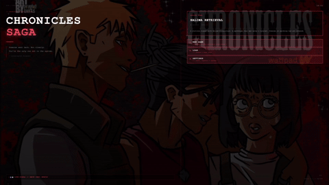
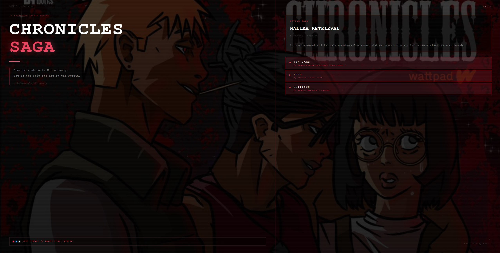
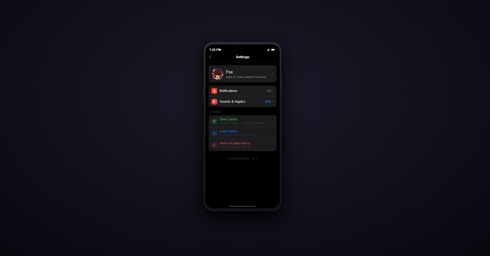
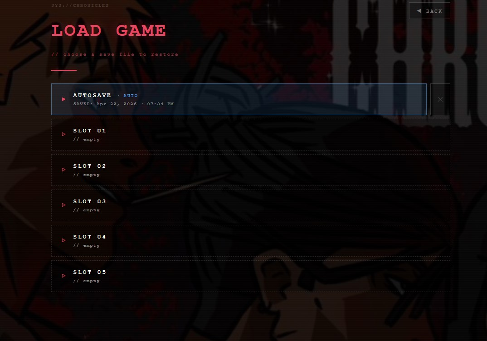

An interactive mystery staged as a hacked phone UI. You play "the Viewer" — someone a missing bounty hunter trusted with her last lead. The whole game plays out on a simulated lockscreen, home screen, and inbox, with the story delivered through chat threads that branch on your choices.

THE PHONE UI — NAVIGATION IN MOTION
You're reading someone else's phone. Notifications arrive on a lockscreen. Swipe up to unlock. Tap the inbox. Different characters text you at different times. Every UI beat doubles as narrative.
Modelling a branching mystery as a chat graph. Conversations need to pause, resume, and fire new incoming messages in background threads — mimicking how a real phone actually feels.
Story content lives in a single JSON file as threads → nodes → choices. Five tiny ES modules handle state, threads, the event engine, the screen router, and the UI. No framework. No build step.
SCREENS
Every top-level screen is just another route the controller switches between — same glassy phone shell, different content. Two of them:

MAIN MENU
The bootscreen of a hacked phone. New game, continue, and settings —
each routed through the same openScreen() dispatcher.

SETTINGS
One of five top-level routes (home / inbox / chat / settings / gallery). Volume, text speed, and a hard-reset button that nukes the save.
ARCHITECTURE
The codebase is deliberately small and boring. Each module owns one concept and exports a handful of functions. No inheritance, no framework, no magic — which means the interesting part is the composition, not the code.
One vars object. applyEffects()
adds numeric deltas (e.g. murnaTrust += 1),
checkCondition() evaluates comparisons.
That's it. Six operators, one source of truth.
A Map of threads, each with messages,
an unread count, and a pointer to the current story node.
Pure data — no DOM. Serializable for saves.
Runs three event types:
incoming (deliver a message),
branch (if/else on state),
system (run a list of actions).
~60 lines that drive the whole story.
Screen router (home / inbox / chat / settings / gallery),
an incoming-message queue for background threads, and a versioned
localStorage save/load.
All content — threads, nodes, choices, effects, triggers — in one file.
Writers can edit the story without touching code. The engine is story-agnostic;
swap scenes.json and you have a different game.
DEEP DIVE
The tempting first pass on a choose-your-own-adventure is to nest conditionals
inside each scene — if (pickedSword) show this, else show that.
That scales to three scenes. By scene thirty, no one can reason about what the player will see.
Chronicles Saga treats branching as state over story: every choice writes a numeric flag into a central store, and the engine evaluates condition events against that store to decide what happens next. Scenes don't know about each other. The story becomes a queryable graph.
state.js — the whole store
export const vars = {}; export function applyEffects(effects = {}) { for (const [k, delta] of Object.entries(effects)) { const current = Number(vars[k] ?? 0); vars[k] = current + Number(delta); } } export function checkCondition(cond) { const left = Number(vars[cond.var] ?? 0); const right = Number(cond.value ?? 0); switch (cond.op) { case ">=": return left >= right; case "<=": return left <= right; case "==": return left === right; // ... } }
// Every Number() cast is deliberate — no surprise coercion.
engine.js — the branch dispatcher
export function runTrigger(data, triggerId, context) { const evt = (data.events || []).find(e => e.id === triggerId); if (!evt) return; if (evt.type === "incoming") { context.enqueueIncoming(evt.thread, evt.node); return; } if (evt.type === "branch") { for (const b of evt.branches) { if (b.else) { for (const action of b.do) context.applyEventAction(action); return; } if (b.if && checkCondition(b.if)) { for (const action of b.do) context.applyEventAction(action); return; } } } if (evt.type === "system" && Array.isArray(evt.do)) { for (const action of evt.do) context.applyEventAction(action); } }
// One function, three event types, zero control flow in the scene data.
NARRATIVE UX
Real texting doesn't pause when you're in another conversation. A mystery game that wants to feel like a phone shouldn't either. So the engine supports background thread delivery: a node in Murna's thread can fire a trigger that queues a new message into Kelvin's thread, which shows up as an unread pill on the inbox and a toast notification while you're still reading Murna.
A trigger fires → engine pushes a { threadId, nodeKey }
onto an incoming queue and kicks the processor.
If the target thread is active, the message types in live. If it's background, it's appended silently and the unread count bumps.
A tappable toast slides in with the thread title and preview. Tapping it jumps straight into that thread.
WIRING
The lockscreen module doesn't import the main controller. The home screen
doesn't import the inbox. Instead, components dispatch CustomEvents
on window and the controller listens. It's a zero-dependency
pub/sub and it makes each module testable in isolation.
// In lockscreen.js — zero knowledge of the controller function unlockToHome() { hideLockscreen(); window.dispatchEvent(new CustomEvent("lockscreen:unlocked_home")); } // In main.js — the controller picks it up window.addEventListener("lockscreen:unlocked_home", () => { isUnlocked = true; openHome(); });
PERSISTENCE
Saves are a single JSON blob in localStorage under a
versioned key. The payload captures the variable store, every thread's full history,
the active thread, and the unlocked state. Loading is a try/catch on
JSON.parse with a version gate — malformed or older
saves are ignored, not crashed on.
const SAVE_KEY = "chronicles_save_v1"; function saveGame() { const payload = { version: 1, savedAt: Date.now(), vars: exportVars(), threads: exportThreads(), activeThreadId, isUnlocked }; localStorage.setItem(SAVE_KEY, JSON.stringify(payload)); showToast("Game saved"); }
// Versioned key means future schema changes won't corrupt old saves.

SAVE FILES — PLAYER VIEW
What the player sees when they tap "Continue." Each slot reads the versioned payload back and surfaces the timestamp, so the UI stays honest about what state you're about to load into.
TRADE-OFFS
The current store is great for "how much does Murna trust you" but loses intent — you can't tell which choice set the flag. A typed event log would make the story replayable and easier to debug. Probably v2.
vars and the threads Map
live at module scope. Fine for a single-player game; would need to be wrapped
in an instance if the engine ever powered multiple sessions side-by-side.
A typo in a next pointer silently breaks a scene.
A lightweight validator that runs at load time would catch this before a player ever hits it.
Level 1 — "Halima's Investigation" — is playable end-to-end. The phone UI, thread-based messaging, branching engine, background delivery, and save system are all shipping. Next up: Level 2 (infiltrate the masquerade auction), character portraits, and a richer condition system for weighted branching.
Source is kept private while the design evolves. For a walkthrough of the engine internals, a look at the code, or to chat about the design, email me and I'll share access.